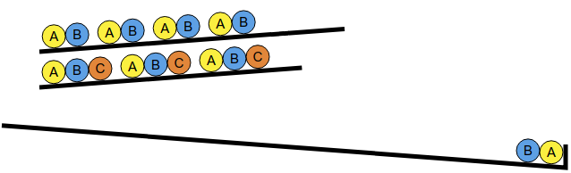
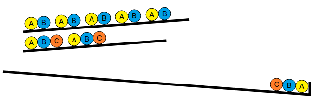
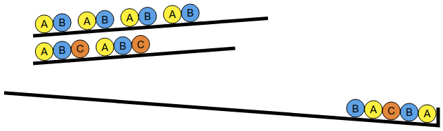
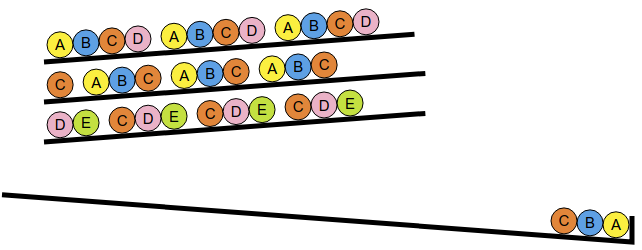
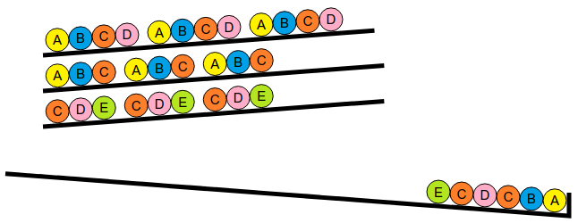
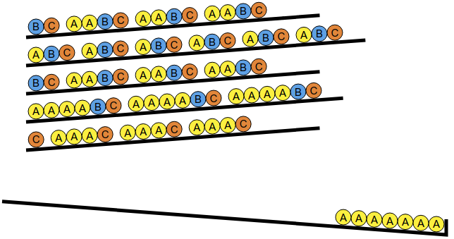
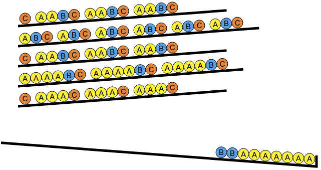
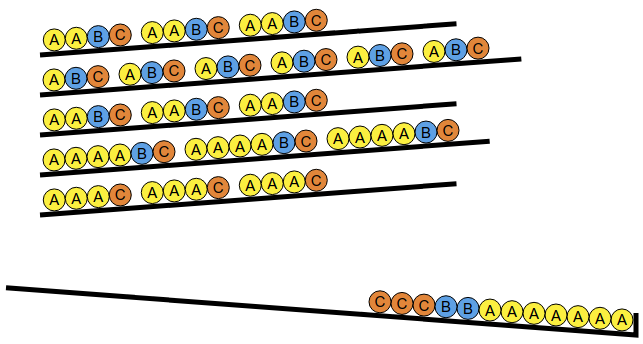

اضغط على الأزرار الرمادية لجعل الكرات تسقط واحدة تلو الأخرى حتى تصنع نفس المتتابعة الظاهرة في الهدف.
إذا نظرنا إلي الهدف، سنجد انه يبدأ بكرة A وكرة B . إذا اسقطنا هاتان الكرتان من أول صف، سنجد نفسنا عالقين، لأنه لايوجد كرة عليها حرف C في الصف الأول.
لذلك يجب عليك البدأ بأخذ هاتين الكرتين A و B من الصف الثاني. لتتمكن من أخد الكرة C اللتي إيضاً في الصف الثاني.
لتتمكن من انهاء اول مجموعة في الهدف، اللتي تحتوي علي 5 كرات، يتبقي لك أن تأخذ كرة A و كرة B . يمكنك أخذها من الصف الأول.
الخلاصة، يوجد حل وهو الضغط علي الازرار 2، 2، 2، 1، 1 ، مع تكرار هذه المتسلسلة.
يوجد حل اخر وهو: 2، 2، 2، 2، 2، 1، 1، 2، 2، 2، 1، 1، 2، 1، 1.
الهدف يتكون من ثلاث مجموعات متشابهة متكونة من نفس المتسلسلة اللتي تحتوي علي 6 كرات، كرة A ، وكرة B ، وكرتان C ، وكرة D ، وكرة E . يمكنك الوصول لهذه الكرات عن طريق أخذ اول 3 كرات من الصف الثاني، و اول 3 كرات من الصف الثالث.
يجب ان تتأكد من إسقاط الكرات بترتيب صحيح حتي لا تعلق. بعد A و B من الصف الثاني، يجب عليك إسقاط C من الصف الثالث، لتتمكن من أخذ D اللتي ستحتاجها في الخطوة القادمة.
للأنتهاء من المجموعة الأولى المتكونة من 6 كرات، يتبقي ان تأخذ كرتان C ، D من الصف الثالث والثاني. وكرة E من الصف الثالث
الخلاصة، يوجد حل وهو الضغط علي الازرار 2، 2، 3، 3، 2، 3 ، مع تكرار هذه المتسلسلة.
يوجد حل اخر وهو: 1، 1، 3، 3، 1، 3، 2، 2، 3، 3، 2، 3، 2، 2، 3، 3، 2، 3.
يتكون الهدف من مجموعتين متطابقتين، تتكون كل منهما بنفس التسلسل المكون من 7 كرات A ،ثم كراتان B ،ثم 3 كرات C .
لإسقاط 3 كرات C على التوالي، يجب عليك ان تجد هذه الكرات في 3 صفوف مختلفة. يجب أن تحتوي هذه الصفوف الثلاثة على كرتان B . هذا يعني أنه يجب عليك استخدام صف لا يحتوي على B . فقط الصف 5 هوا المناسب لهذا.
لتحديد الصفين الآخرين اللذين ستستخدمهما، عليك أن تجد المكان الذي ستأخذ منه 7 الكرات A . مع العلم أن الصف 5 سيوفر لنا 3 كرات A ، لذلك تبقى هناك 4 كرات A يجب اخذهم من صفين آخرين. يوجد حل واحد فقط لذلك، وهو استخدام الصفوف 1 و 3 .
باختصار ، نبدأ بإسقاط جميع الكرات A على رأس الصفوف 1 و 3 و 5 .
ثم، تقوم بإسقاط الكرات B من الصفوف 1 و 3 .
أخيرًا، قم بأسقاط الكرات C من الصفوف 1 و 3 و 5 .
في النهاية، يكمن الحل في الضغط فوق الأزرار: 1 ،1 ،3 ،3 ،5 ،5 ،5 ،1 ،3 ،1 ،3 ،5 ،وكرر هذا تسلسل مراتان.